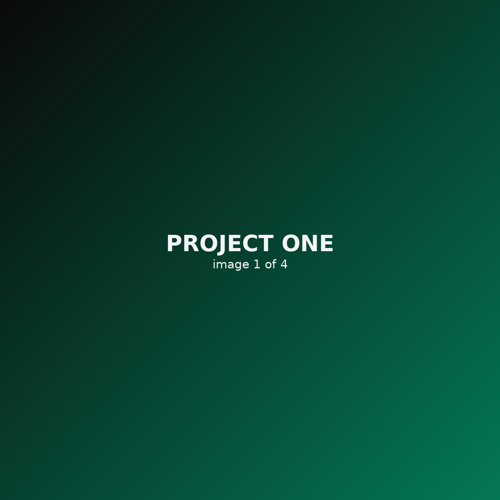
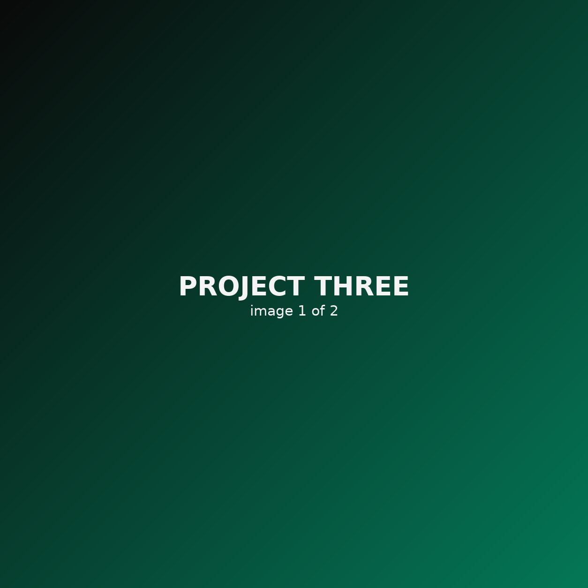
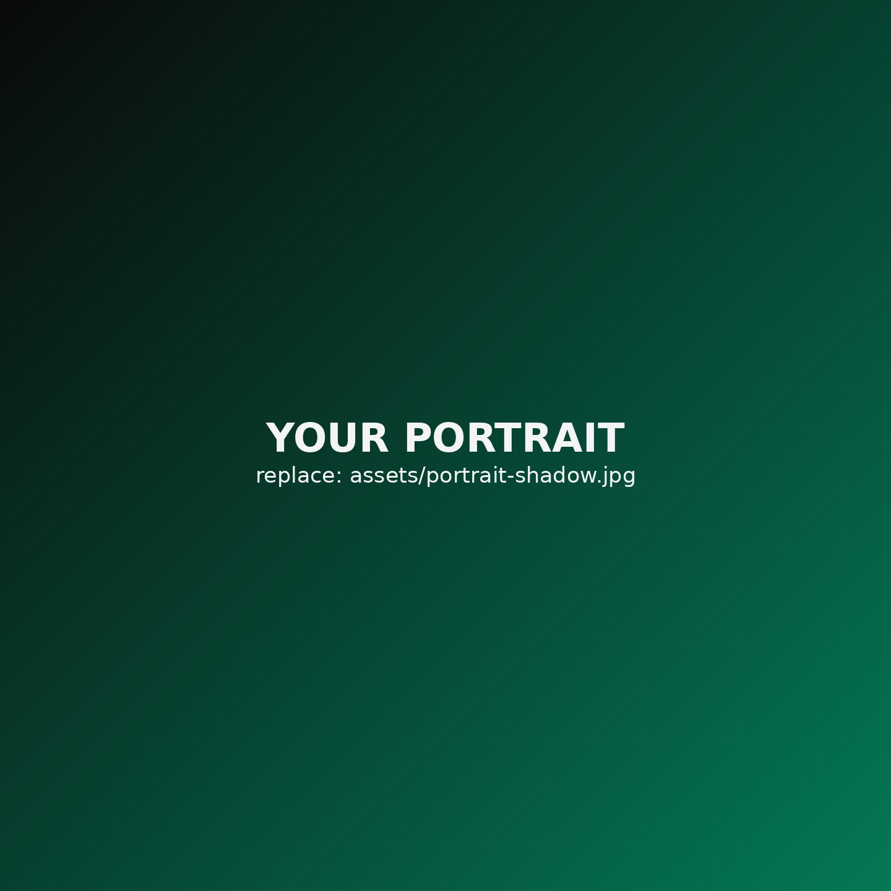
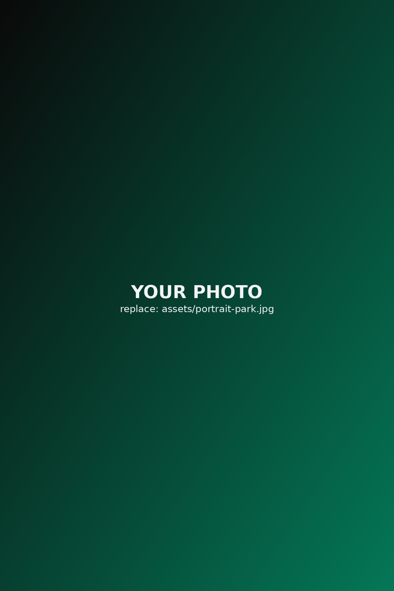

البحث
أفحص الأدوات والنماذج والمراجع لأفهم الإمكانات قبل أن أختار.
اسمك / المدينة، البلد
اكتب هنا نبذة قصيرة عنك: ماذا تصنع، وما الذي يهمك، ونوع العمل الذي تحب تقديمه. سطران أو ثلاثة تكفي.
تعرّف أكثر ↓
أفضل مشاريعك، مجتمعة في معرض واحد.



صورأفلامتجارب
طريقتي
دورك أو حرفتك في سطر واحد
أعوام من الخبرة في مجالك
تركيزك أو حرفتك الحالية
خبرة تتّسع
من الفكرة إلى التنفيذ
أصل بين البحث وصياغة الأوامر والتصوّر البصري والإنتاج، في خطوات واضحة تمنح الفكرة مساحة للتجربة وطريقًا إلى التنفيذ.
أفحص الأدوات والنماذج والمراجع لأفهم الإمكانات قبل أن أختار.
أصوغ الأوامر وأختبرها، وأطوّرها مع كل نتيجة.
أحوّل التصوّر إلى صور ومواد بصرية وخطوات إنتاج مترابطة.
ما أعمل عليه

من أين بدأت
اكتب هنا قصتك: من أين بدأت، والطريق الذي سلكته، وما تعلمته في كل مرحلة منها.
ثم اربط ذلك باليوم: ماذا تصنع الآن، ولماذا تجعلك هذه الرحلة متميزًا فيه.
الخبرات بالتفصيل ↖لنعمل معًا
أرحّب بالتعاون في البحث والإنتاج الإبداعي، وبالأفكار التي تحتاج إلى تفكير متأنٍّ وطريقة واضحة للعمل.